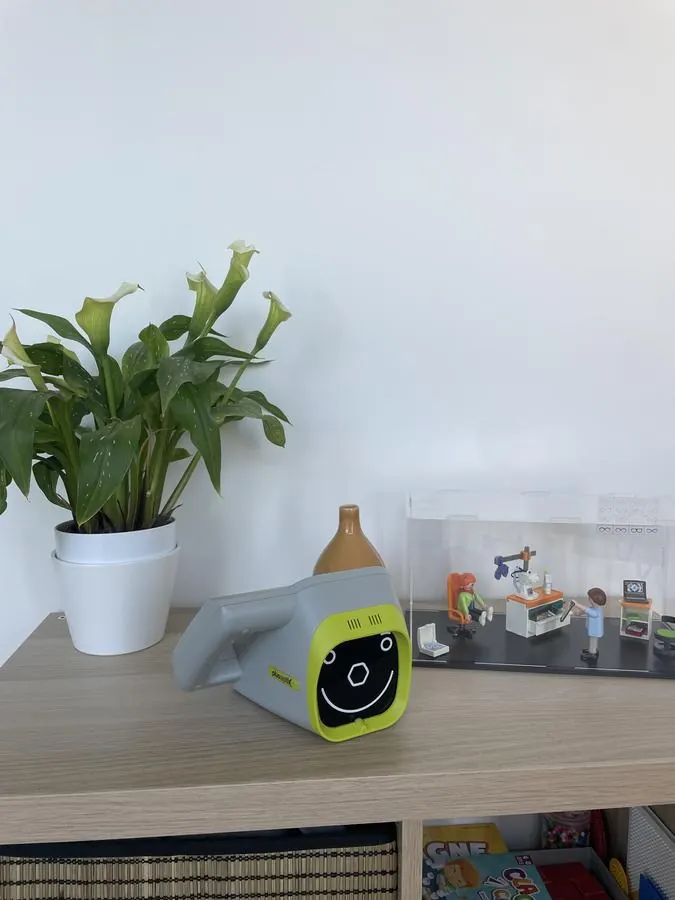

Espace de Santé Saouzelong Canal · Toulouse
Orthoptiste à Toulouse
Clément Maupomé
Un bilan visuel adapté à chacun, de la naissance au grand âge, coordonné avec tous vos professionnels de santé.


- Bilans dès 9 mois
- Remboursé sur prescription
- Accessible PMR, rez-de-chaussée
- Métro B Saouzelong
Pour qui ?
Choisissez la situation qui vous concerne pour trouver la bonne information.
Domaines de prise en charge
Bilans et rééducations orthoptiques pour tous les âges.
Autisme (TSA)
Un bilan neurovisuel adapté à l'enfant verbal ou non verbal : réfraction, vision binoculaire et vision fonctionnelle, puis une prise en charge adaptée à ses particularités sensorielles.
En savoir plus →Apprentissages, dys et TDA/H
Évaluation et rééducation des troubles visuels qui pèsent sur la lecture, l'écriture, la copie et l'attention.
En savoir plus →Dépistage du bébé et de l'enfant
Bilans dès 9 mois, puis aux âges recommandés de 3–4 ans et 5–6 ans, avec un matériel adapté aux plus jeunes.
En savoir plus →Vision binoculaire
Maux de tête, fatigue visuelle, vertiges, vision double : bilan et rééducation des troubles de la vision binoculaire.
En savoir plus →Basse vision
Réadaptation visuelle au quotidien en cas de DMLA, glaucome, rétinopathie diabétique ou décollement de rétine.
En savoir plus →Lunettes (16–42 ans)
Bilan visuel et ordonnance de lunettes sans passer par l'ophtalmologiste, pour une première paire ou un renouvellement.
En savoir plus →Comment ça se passe ?
De l'ordonnance au suivi, en cinq étapes.
L'ordonnance
Votre médecin prescrit un bilan orthoptique. Pas besoin d'ordonnance pour un bilan « lunettes » entre 16 et 42 ans.
Le rendez-vous
Réservez en ligne sur Doctolib, à toute heure, ou par téléphone.
Le bilan
Un examen complet, adapté à l'âge et à la situation. Durée : environ … min.
Le compte rendu
Il est adressé à votre médecin pour coordonner le suivi.
Les séances
Si besoin, une rééducation est proposée, avec un nombre de séances adapté au bilan.
À apporter : l'ordonnance, la carte Vitale, les lunettes actuelles, le carnet de santé pour un enfant et les derniers comptes rendus ophtalmologiques.
Le cabinet en images
Un cabinet lumineux, en rez-de-chaussée, équipé pour tous les âges. Découvrir le cabinet →




Une prise en charge personnalisée et coordonnée
Au sein de l'Espace de Santé Saouzelong Canal, du nourrisson à la personne âgée.